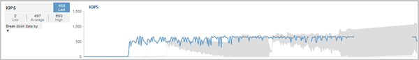

はじめに
はじめに
本製品の最新リリースがご利用いただけます。
日本語は機械翻訳による参考訳です。内容に矛盾や不一致があった場合には、英語の内容が優先されます。
クラスタでの処理がワークロードのレイテンシに与える影響
共同作成者
 変更を提案
変更を提案-
 このドキュメント ページのPDF
このドキュメント ページのPDF
-
Unified Manager をインストールします
-
オンラインヘルプ
-
PDF版ドキュメントのセット
Creating your file...
This may take a few minutes. Thanks for your patience.
Your file is ready
処理（ IOPS ）には、クラスタで実行されるユーザ定義とシステム定義のすべてのワークロードのアクティビティが含まれます。IOPS の統計は、クラスタでの処理（バックアップの作成や重複排除の実行など）がワークロードのレイテンシ（応答時間）に影響を及ぼしていないかどうかやパフォーマンスイベントの原因となっていないかどうかを確認するのに役立ちます。
パフォーマンスイベントを分析するにあたっては、 IOPS の統計を使用して、クラスタの問題がパフォーマンスイベントの原因となっていないかどうかを確認できます。パフォーマンスイベントの原因となった可能性がある具体的なワークロードアクティビティを特定することができます。IOPS は 1 秒あたりの処理数（処理数 / 秒）として測定されます。

この例は、パフォーマンス/ボリュームの詳細ページに表示されるIOPSチャートを示しています。実際の処理の統計が青い線で示され、処理の想定範囲がグレーで示されます。

|
Unified Managerでは、クラスタが過負荷状態の場合、というメッセージが表示されることがあります |